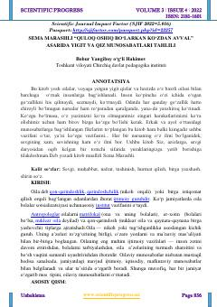

SMSema Marashli asari misolida oilaviy munosabatlar va muloqot odobining ilmiy tahlili.
Ushbu ilmiy maqolada turk yozuvchisi Sema Marashlining oilaviy munosabatlarga bag‘ishlangan asari tahlil qilinadi. Muallif er-xotin o‘rtasidagi muloqot madaniyati, o‘zaro hurmat va oila mustahkamligi masalalarini yoritib beradi.